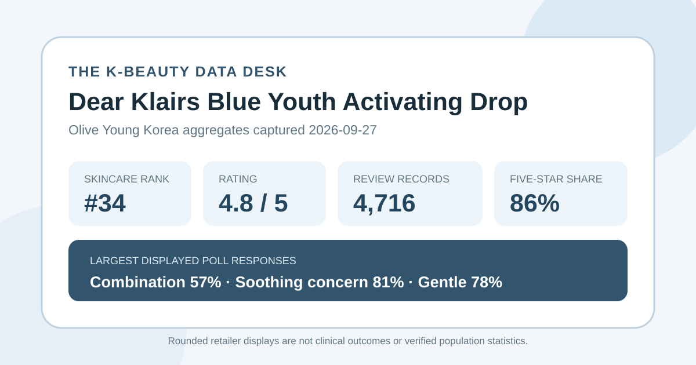
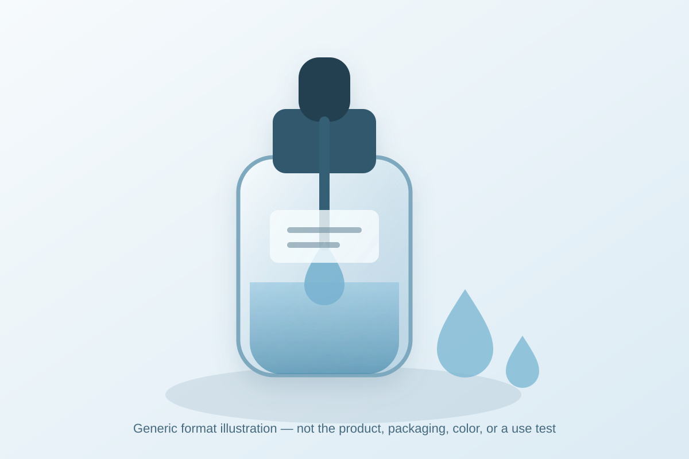

Data captured September 27, 2026. This is an independent analysis of retailer-displayed product information and anonymous aggregate review signals. I did not test the product, and no individual review, reviewer identity, product photograph, or user photograph is copied or translated.

The short version: Dear Klairs Blue Youth Activating Drop appeared at number 34 in the captured skincare sales ranking. Its product review button and detailed review view agreed on 4.8 out of 5 from 4,716 records. The visible distribution was favorable, while the polls most strongly represented combination skin, soothing as a shopping concern, and the gentle response.
The displayed pattern is strongly positive: 86% of selections fall at five stars and another 9% at four stars. A base of 4,716 records is large enough to describe the storefront pattern with more confidence than a listing supported by only a few ratings. It still does not turn a retail average into a controlled product comparison or a clinical result.
The displayed shares total 101%, a normal consequence of rounding each category separately. They should not be multiplied by 4,716 to invent exact counts. The correct reading is directional: high-star selections dominate, but lower selections remain visible and the display does not explain why each shopper chose a score.
Combination skin was the largest captured skin-type response at 57%, followed by oily at 28% and dry at 15%. This shows who was most represented among people who answered that storefront question. It does not show that the formula performs better for combination skin, that those labels were clinically assessed, or that the respondents represent every buyer.
The concern poll leaned heavily toward soothing at 81%, with hydration at 14% and wrinkle/brightening at 5%. Concern labels are best understood as shopping context: they indicate what respondents had in mind, not whether redness, dryness, wrinkles, or pigmentation objectively changed. The 81% share is not an 81% success rate.
The irritation poll showed 78% gentle, 21% ordinary, and 1% felt irritation. That is a favorable aggregate tolerance signal, but it is not a safety study and cannot predict an individual's response. Product condition, concurrent routine, application amount, environment, and personal sensitivity are not controlled by the display.
The retailer's automated summary classified 85% of a recent-review subset as positive. It grouped discussion into broad themes around quick or light-feeling absorption and finish, calming impressions, and impressions involving skin texture or visible marks. Those are anonymous aggregate themes only. This article does not reproduce the source review wording, identify reviewers, or assume the subset represents all 4,716 records.
Automated grouping compresses nuance and can merge different experiences under the same label. A “light finish” may be welcome to one shopper and insufficient to another. “Calming” and “mark” language remains subjective unless a controlled measurement is provided. The themes are useful as questions to investigate, not as proof of faster absorption, reduced redness, smoother skin, fading marks, or any durable biological change.

The listing places the item in the essence, serum, and ampoule category and identifies a 50 ml “drop” format. The local illustration therefore shows only a generic bottle-and-liquid concept. I did not handle or apply the product. I cannot confirm whether it is watery, viscous, tacky, fast-drying, glossy, matte, scented, comfortable under sunscreen, or compatible with makeup.
Those practical details can matter more than a star average in a daily routine. If finish is decisive, a current tester, authorized description, or return policy is more useful than an illustration. The visual deliberately avoids retailer photography, logos, packaging, and formula-specific claims.
The captured listing showed ₩52,500 as the reference price and ₩37,050 as the promotional price for 50 ml, equivalent to the page's displayed ₩7,410 per 10 ml. That is a dated retail snapshot, not a value verdict. Price, coupons, stock, seller terms, and regional availability can change, and a lower price does not establish better fit.
The Korean promotional title included strong ingredient and category language. This analysis preserves only the stable product identity needed to distinguish the listing. It did not independently verify ingredient concentration, source, purity, stability, delivery, current regional formula, or any superiority claim. A marketing phrase in a title is not evidence of clinical performance.
If skin is actively inflamed, broken, recently treated, unusually reactive, or under medical care, retailer aggregates should not direct treatment. Follow the current label and qualified advice appropriate to the situation. Stop use if a concerning response occurs and seek help when needed.
The captured review button and detailed review view both displayed 4.8 out of 5 from 4,716 records. Rounded star shares were 86% five-star, 9% four-star, 4% three-star, 1% two-star, and 1% one-star.
Combination was the largest skin-type poll response at 57%, followed by oily at 28%. That describes poll representation, not comparative performance or guaranteed suitability.
No. Twenty-one percent selected ordinary and 1% selected felt irritation. These rounded self-reports are not a safety study and cannot predict personal tolerance.
No. Soothing was the largest concern-poll label, while promotional wording appeared in the listing title. Neither is a controlled outcome, clinical claim verification, or medical recommendation.
No. It is a brand-neutral local format illustration, not product photography, a swatch, a user image, or evidence of the real formula's color and feel.
Dear Klairs Blue Youth Activating Drop was the first valid unpublished product family in the captured skincare ranking, appearing at number thirty-four after thirty-three already-covered products or promotional configurations. Its ranking and detail names agreed, two review surfaces matched on 4.8 stars from 4,716 records, and the page exposed a useful rounded star distribution plus three complete shopper polls.
The aggregate pattern is favorable: five-star selections dominate, combination skin is most represented, soothing leads the concern poll, and gentle leads the irritation poll. That supports a careful, data-limited shopping profile—not a claim that the product reduces redness, repairs skin, fades marks, changes wrinkles, brightens, or suits every buyer. Verify the current formula and retail terms, consider the rest of the routine, and judge personal tolerance separately from popularity.
← All K-Beauty Data Desk reviews · Best-seller rankings · Skin-poll representation · About & methodology
The analysis is based on the dated retailer product page captured on 2026-09-27. Open the source listing.
Published by The K-Beauty Data Desk · Aggregate data captured 2026-09-27. No individual review text, name, product photo, or user photo is reproduced or translated. I did not test the product and received no product or payment for this coverage.